Creating the Fight Microservice
Ok, let’s develop another microservice. We need a new REST API that invokes those two, gets one random hero and one random villain and makes them fight. Let’s call it the Fight API.
Bootstrapping the Hero Rest Endpoint
Once logged in the Red Hat Developer Hub, please proceed with following steps:
- Navigate to the Create Option: in the left-hand menu of the RHDH, click on the “Create” option.
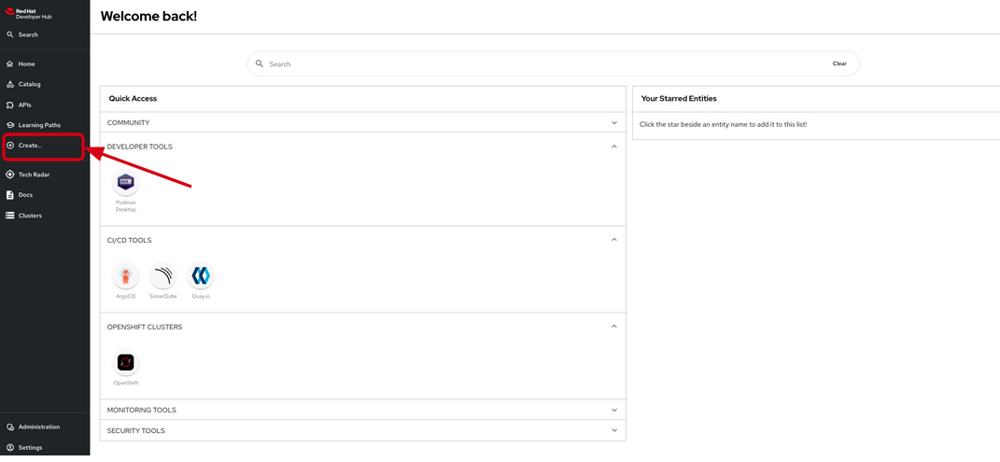
- Select the template: you’ll see a list of available templates. Choose the
OpenCodeQuest - AI-Infused application with Quarkustemplate from the list.
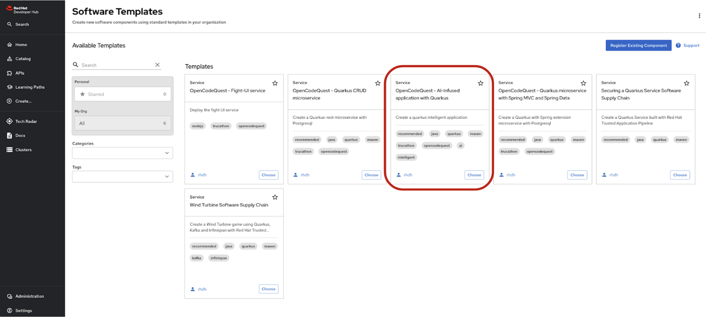
- Select your cluster name, check the reference in the current url. The rest of the fields will be pre-filled by default.
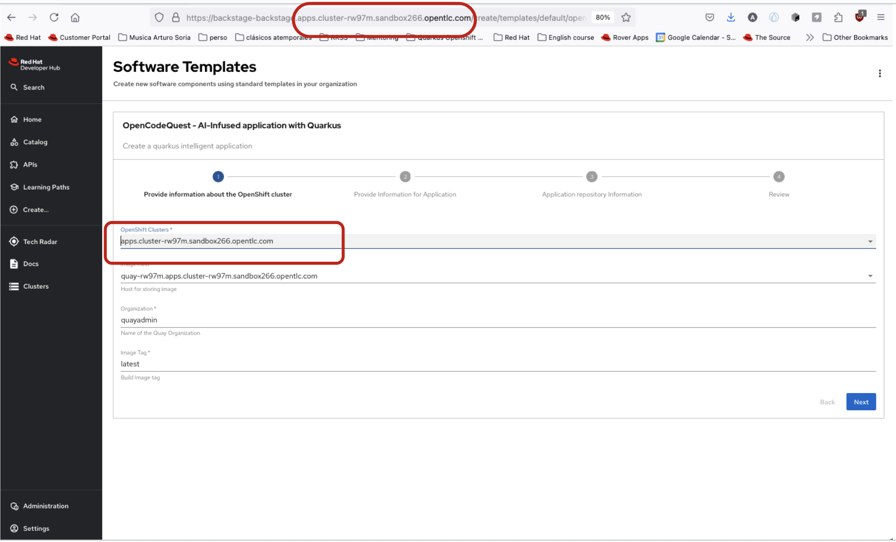
- Click Next button until a summary is shown
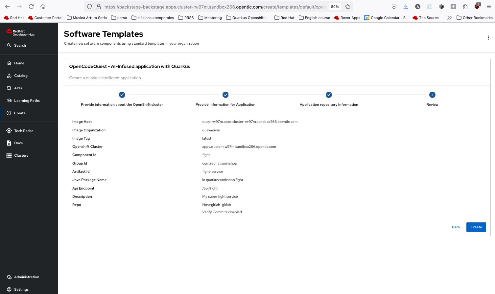
-
Review the configuration. Then, click on
Create. -
If everything went well, you should see the following successful page. Click on the
Open Component in Catalog:
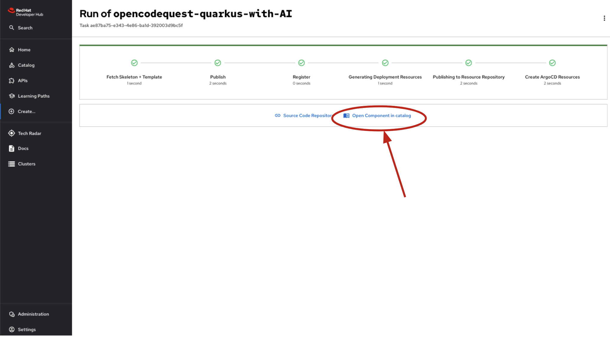
- Once in the fight-service component home page, you can launch the Dev Spaces opening by clicking the link OpenShift Dev Spaces (VS Code)
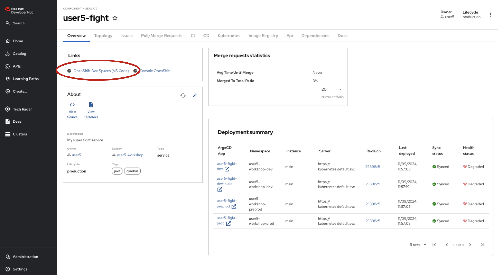
You should see the following page while the Dev Spaces is starting up:
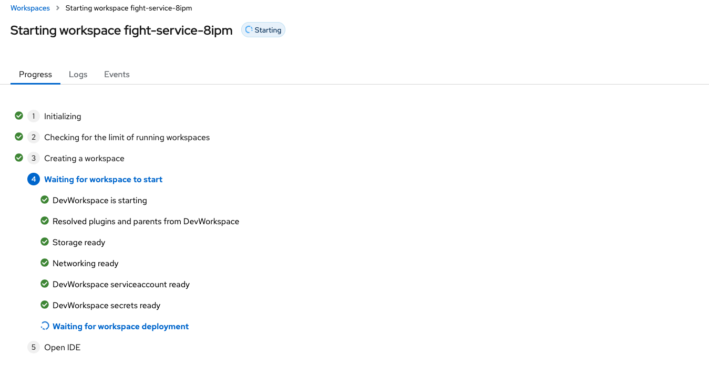
The Fight Service
The Fight service is a Quarkus intelligent service. Instead of randomly selecting a winner in the battle between heroes and villains, he can interact with a language model (LLM) and delegate the decision to it. Furthermore, this consultation will not only provide a winner but also a detailed description of how the fight unfolded.
First, let’s have a look at the big picture. When integrating an LLM into a Quarkus application, you need to describe what you want the AI to do. Unlike traditional code, you are going to explain the behavior of the AI using natural language.
The following diagram illustrates the interactions between the Fight service and the LLM.

The Quarkus-LangChain4j Extension
This extension is based on the LangChain4j library, which provides a common API to interact with LLMs. The LangChain4j project is a Java re-implementation of the famous langchain library.
Note that the extension is already present in the pom.xml file of your Fight service:
<dependency>
<groupId>io.quarkiverse.langchain4j</groupId>
<artifactId>quarkus-langchain4j-openai</artifactId>
<version>${quarkus-langchain4j.version}</version>
</dependency>
Configuration
Configuring OpenAI models mandates an API key or API url among others.
Copy the following configuration in your application.properties file:
They are self-explanatory, but you can check the documentation for more information.
Directory Structure
Notice that by bootstrapping the project with the specific OpenCodeQuest - AI-Infused application with Quarkus template, you get the following directory structure with a few Java classes already created and other artifacts:
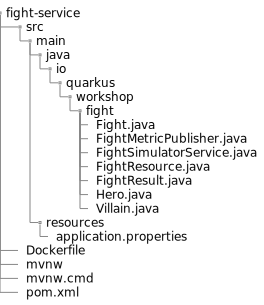
It generates the following in the fight-service folder:
- the Maven structure with a
pom.xml - an
io.quarkus.workshop.fight.FightResource.javaresource exposed on/api/fights. - a straightforward java Record
Fight.javathat encapsulates the hero and villain inputs for a fight. - the corresponding
Hero.javaandVillain.java. - a java Record
FightResult.java. Quarkus automatically creates an instance ofFightResultfrom the LLM’s JSON response. - an intelligent service
FightSimulatorService.java. This is where we will define the interaction with the LLM. - the
application.propertiesconfiguration file.
Defining LLM interactions
It’s time to tell the LLM what we want to do.
The Quarkus LangChain4J extension provides a declarative way to describe LLM interactions.
We model the interaction using an interface annotated with @RegisterAiService.
Edit the java interface FightSimulatorService.java under src/main/java/io/quarkus/workshop/fight and copy the following content:
The rest of the application would be able to use the LLM by injecting the FightSimulatorService interface and calling the methods.
Speaking about methods, that’s where the magic happens.
These methods accept parameters and are annotated with @SystemMessage and @UserMessage to define instructions directed to the LLM.
You should describe what you want the LLM to do using natural language.
The system defines the scope and initial instructions, serving as the first message sent to the LLM. It delineates the AI service’s role in the interaction.
User Message (Prompt)
Notice the presence of the @UserMessage annotation FightSimulatorService.
It defines primary instructions dispatched to the LLM.
It typically encompasses requests and the expected response format.
As you can note, we are using a prompt template with following format.
This format is expected by the model.
<|system|>
system prompt
<|user|>
content of the question
<|assistant|>
new line for the model's answer
Parameter Passing and Referencing
AI methods can take parameters referenced in system and user messages using the {parameter} syntax. Note the {hero} and {villain} references.
AI Method Return Type
The fight method returns a FightResult. The JSON response will be mapped to that object directly.
Fault Tolerance
The distributed nature of microservices makes external communication unreliable, increasing the need for application resiliency. Quarkus addresses this by offering SmallRye Fault Tolerance, based on the MicroProfile Fault Tolerance specification.
In the pom, you can see the corresponding smallrye dependencies:
Then, in the code, notice the presence of the @Timeout annotation in the fight method
If the LLM invocation is taking too long, the @Timeout annotation can stop it after 1 minute, preventing it from hanging indefinitely.
The Fight Resource
Now, let’s take a look to the FightResource.java.
This is a JAX-RS resource just like the Hero endpoint where the FightSimulatorService is injected.
Then the intelligent fight method is called from the exposed fight method.
Start the Fight service in dev mode
We are now ready to run our application.
Open a Terminal and run one of the following commands:
./mvnw quarkus:dev
or
quarkus dev
Verify the Fight service using the Swagger UI
Go to the Red Hat Developer Hub, in the fight component dashboard, just click on the Api tab:
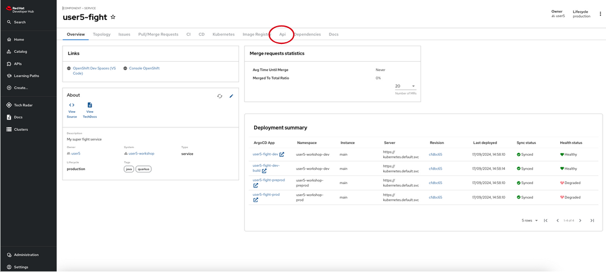
Then, select the $USER-fight provided API
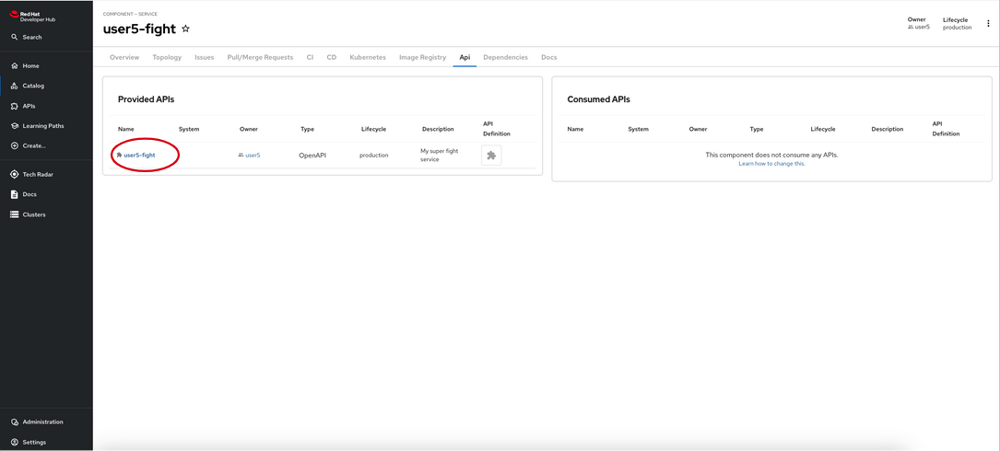
And, finally, click in the Definition tab
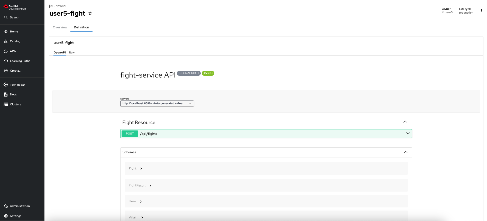
Here you can see the Swagger UI for Fight API.
Deploy the Fight microservice
To deploy the Fight service, remember to perform a commit&push of the code. You can get some help here
-
 Stop the dev mode
Stop the dev mode
Remember to stop the fight-service launched in dev mode.
Verify that everything works by navigating to the fight-ui dev url and launch a few fights between heroes and villains!
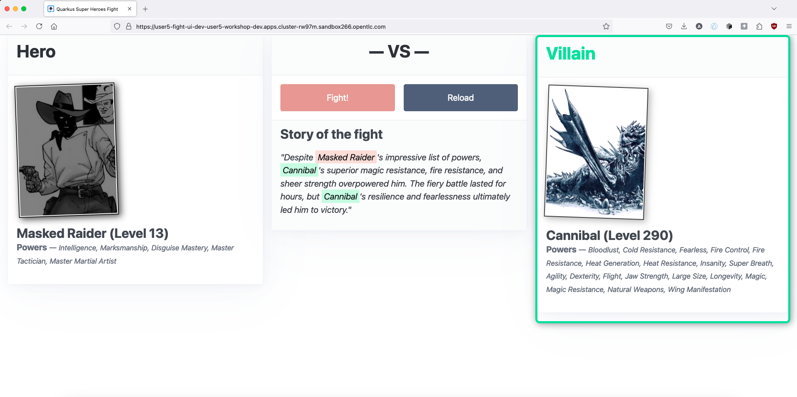
Observability
Observability is built into services created via @RegisterAiService and metrics collection is enabled when quarkus-micrometer is part of the application.
Micrometer defines an API for basic meter types, like counters, gauges, timers, and distribution summaries, along with a MeterRegistry API that generalizes metrics collection and propagation for different backend monitoring systems.
Be aware that the micrometer-registry-prometheus extension is already present in your pom.xml file.
Metrics
Each AI method is automatically timed and the timer data is available using the langchain4j.aiservices.$interface_name.$method_name template for the name.
Create your own metrics
Metrics data is used in the aggregate to observe how data changes over time.
Metrics are already in place.
The java class FightMetricPublisher.java under src/main/java/io/quarkus/workshop/fight contains a CDI bean as follows:
We can see two counters there. Counters measure values that only increase. The counter is created directly on the MeterRegistry.
fights is the counter name and won-by is a tag with two possible values: heroor villain.
This counters will tell us who is winning more times, if heroes or villains.
Finally, check how the FightMetricPublisher is injected in the FightResource and called each time that a fight happen.
Verify metrics
The Micrometer Prometheus MeterRegistry extension creates an endpoint we can use to observe collected metrics, this endpoint is exposed in $fight-service/q/metrics path.
Let’s take a look at the metrics that have been collected:
- Click on Topology tab of the fight service in Red Hat Developer Hub
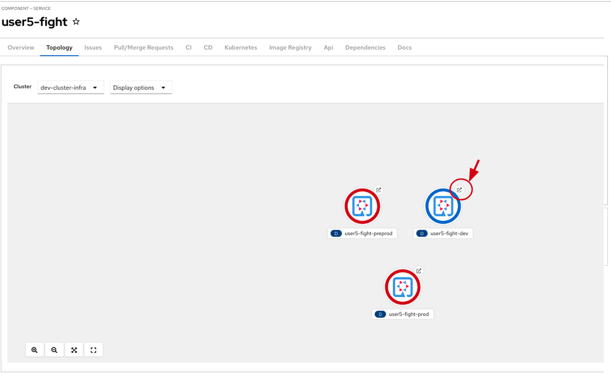
- Click the arrow
- A new tab should open.
- Add the
/q/metricspath to the url opened in previous step. You should see the metrics. Besides some automatically generated metrics like thehttp_server_requests_seconds_countorhttp_server_requests_seconds_sum, you should also see the custom metrics counting the fights calls and how many times won the heroes and the villains:
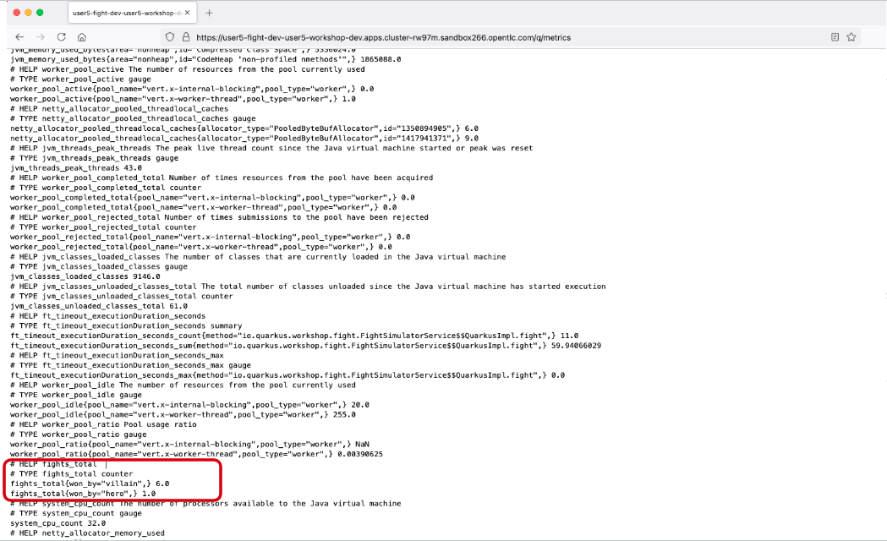